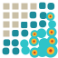
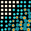
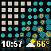
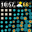

Lichen Grid
An orderly LED grid left out in the rain. The top-left pixels are still square; the rest have softened, swollen and grown into lichen cups.
The square pixels take the text color of whatever they sit on, so the mark holds up on every dashboard look. The moss and spores keep their own colors.
In the dashboard header
The real header lockup at its real size (30 px), on each of the four looks.
Small sizes
At 16 px the lichen cups merge into texture. The square corner is what keeps it recognizable.

SpotDivoom 64browser tab (favicon)On the Pixoo 64
Rendered by the app's own code (create_logo_idle_image and the time & weather bar). This is what the panel shows before the first album cover loads, or when the idle mode is set to the logo.



Colors
Screen colors on the left come from the Faded film look. LED colors on the right are pushed brighter and kept flat so they survive the panel.